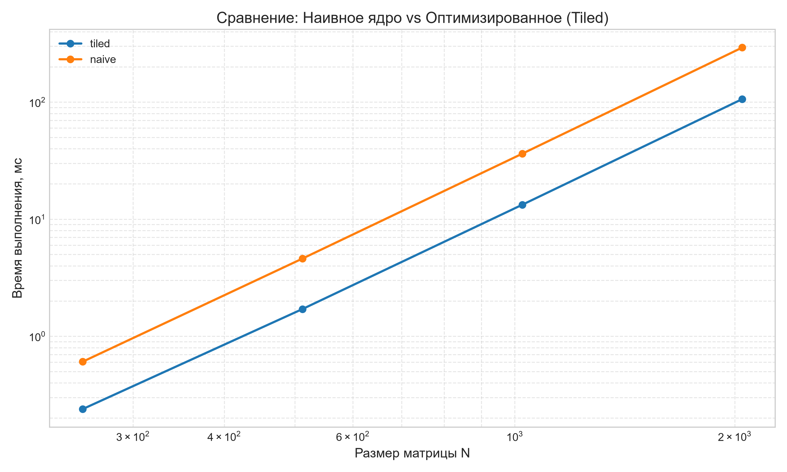
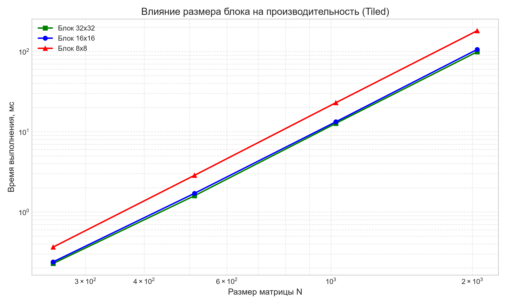

Изучение архитектуры графических процессоров (GPU) и технологии CUDA. Реализация алгоритма умножения квадратных матриц с использованием глобальной и разделяемой (shared) памяти. Исследование влияния конфигурации сетки блоков на производительность.
n243 / n250).nvcc.Были реализованы два варианта ядер CUDA:
__shared__). Блок потоков загружает плитку (tile) матриц A и B в быструю shared-память, синхронизируется через __syncthreads() и выполняет умножение. Это значительно снижает нагрузку на глобальную память.| Размер (N) | Tiled (8x8) | Tiled (16x16) | Tiled (32x32) | Naive (16x16) |
|---|---|---|---|---|
| 256 | 0.3652 | 0.2387 | 0.2281 | 0.6060 |
| 512 | 2.8631 | 1.7082 | 1.5937 | 4.6105 |
| 1024 | 23.0026 | 13.2967 | 12.7107 | 36.2861 |
| 2048 | 181.5614 | 106.0933 | 99.1625 | 292.3870 |


Эффективность Shared Memory: На матрице N=2048 оптимизированное ядро (Tiled 32x32) выполнилось за 99 мс, тогда как наивное ядро — за 292 мс. Ускорение в ~3 раза достигнуто исключительно за счет кэширования данных в разделяемой памяти.
Влияние размера блока: Блок 8x8 слишком мал (мало потоков, много блоков), поэтому работает медленнее. Блоки 16x16 и 32x32 показывают лучшие результаты. 32x32 дает максимальную производительность, так как лучше использует пропускную способность памяти, но требует много shared-памяти.
Сравнение с CPU: В лабораторной работе №3 (MPI) умножение матрицы 2048x2048 на 1 ядре CPU заняло 20 626 мс. GPU с использованием CUDA справился за 99 мс. Ускорение составило более чем в 200 раз! Это наглядно демонстрирует мощь массивного параллелизма GPU.
В ходе работы была успешно освоена технология CUDA. Реализованы и протестированы наивный и тайловый (tiled) алгоритмы умножения матриц. Подтверждено, что правильное использование иерархии памяти GPU (в частности, shared memory) критически важно для производительности. Технология CUDA показала колоссальное превосходство над CPU при решении задач линейной алгебры.